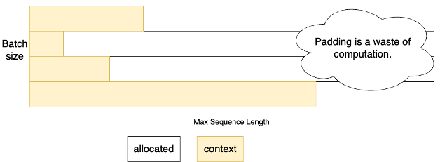
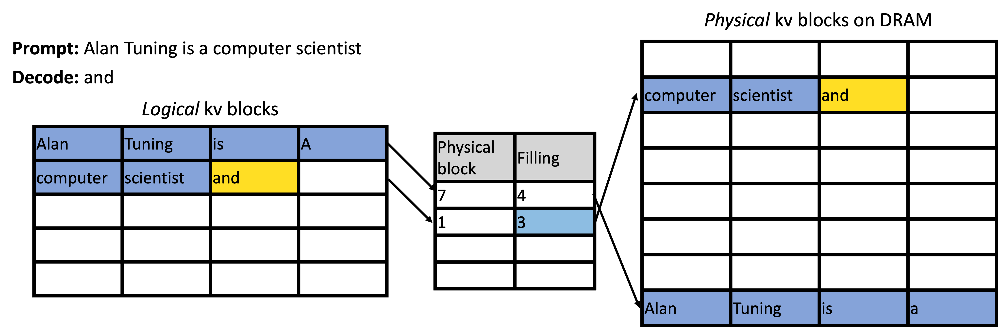

Paged Attention #
In the previous section, we saw how continuous batching fundamentally improves LLM serving by rebuilding the batch at every decoding step. This keeps the accelerator device busy, reduces wasted computation, and dramatically lowers latency for shorter requests.
However, continuous batching alone is not sufficient for achieving high throughput in real LLM systems. Even with perfect scheduling, the decoding phase can still become bottlenecked by memory, not compute.
This is because Transformer attention requires the entire KV cache (i.e., all previously generated tokens for each request) to be kept resident in the device memory. As the number of concurrent requests grows and as sequences become longer, the KV cache quickly consumes a large portion of the device memory. This limits how many requests can fit in the batch at once, which in turn restricts the maximum throughput of continuous batching.
In other words:
Continuous batching keeps the accelerator ready to process more requests, but memory
limitations prevent the accelerator from actually hosting more requests.
In this section, we will discuss Paged Attention, which was introduced to address this bottleneck. Similar to paging in operating systems, by reorganizing the KV cache into small, fixed-size blocks that can be allocated on demand and reused flexibly, Paged Attention enables high concurrency, reduces fragmentation, and unlocks the full potential of continuous batching.
The Limitations of Naive KV Cache Allocation #

Before Paged Attention, the simplest way to support continuous batching for LLMs was to preallocate KV space to the maximum model sequence length for every request [1]. This is easy to implement, but it carries several severe drawbacks:
Must Allocate Maximum Space due to Unknown Decoding Length #
Each request may decode a handful of tokens or hundreds. Since the decoding length is unknown and tensors are allocated on contiguous space, systems must reserve KV space equal to the maximum sequence length the model supports (e.g., 128k for LLaMA-3.1).
This causes devastating internal fragmentation:
- A request that only generates 10 tokens still occupies an 128k-token KV buffer.
- Tens of such requests quickly exhaust accelerator memory.
Severely Limits Maximum Batch Size and Hurts Throughput #
Preallocating full-length KV for each request drastically reduces how many requests can fit on the GPU simultaneously.
Let’s make this concrete using a LLaMA3-70B model on 8 GPUs (TP=8):
- 80 layers
- 1 KV head per GPU shard
- 128-dim per head
- FP16 (2 bytes) KV storage
The KV cache size per token is roughly:
Per token KV ≈ 2 bytes × (K + V) × num_layers × num_kv_heads × head_dim
= 2 × 2 × 80 × 1 x 128
= 40KB
Pre-allocating maximum context space (128k) for a request takes 40KB * 128k ≈ 5GB per GPU.
As we support larger models and longer context length, this wastes memory and eliminates opportunities for optimization.
The Key Idea: Bring OS Paging Principles to KV Memory #
Operating systems solved a similar problem decades ago:
How do you manage memory for processes with dynamic, unpredictable growth
without requiring contiguous allocation?
The answer was paging:
- Break memory into fixed-size blocks
- Allocate blocks on demand
- Maintain a page table mapping logical addresses to physical blocks
- Allow physical blocks to be located anywhere in memory
Paged Attention was proposed by vLLM [2] to adapt this idea for the LLM KV cache.
Note: “Page” and “Block” are often used interchangeably in the context of Paged Attention.
How Paged Attention Works #
Paged Attention treats each request’s KV cache as a virtual address space, backed by fixed-size blocks of GPU memory.

Partition GPU Memory into Fixed-Size KV Blocks #
Instead of allocating a giant contiguous buffer per request, the KV cache is split into blocks (e.g., 4KB per block). These blocks form a global pool shared among all requests.
Allocate Blocks On Demand #
As a request decodes tokens:
- The system fills the current block
- When the block is full, a new block is allocated from the global pool
- Only the memory actually needed is used
Short requests use few blocks; long requests use more. Memory usage scales gracefully with actual decoding progress.
Maintain a Block Table #
Each request maintains a lightweight structure mapping:
Logical token positions → Physical block locations
From the model’s perspective, the KV cache appears contiguous, but physically it is scattered across blocks.
Paged-Attention GPU Kernel #
A specialized attention kernel is introduced to support loading from paged KV cache:
- Follows the block table to locate the correct KV segments
- Reads KV entries from non-contiguous physical blocks
- Merges them seamlessly inside the attention computation
Performance Advantages and Tradeoffs #
Paged Attention directly unlocks higher concurrency and throughput by making KV memory flexible and efficient.
-
Reduces Fragmentation
Fixed-size blocks prevent memory from getting unusably “chopped up”. Blocks are recycled instantly after request completion and freed blocks can serve any future request immediately. -
Higher Batch Size → Better GPU Utilization
Because KV is allocated on demand instead of at maximum size, the system can host many more parallel requests, enabling continuous batching to operate at full efficiency. -
Supports Shared Prefixes
Identical prefix KV entries can be shared across requests, reducing duplication and further improving memory efficiency. -
Works Naturally With Continuous Batching
Because block allocation is handled independently for each request on demand, the system can easily handle new requests joining and old requests leaving at each decoding step.
However, Paged Attention introduces a tunable parameter: block size. This affects both memory efficiency and GPU kernel performance.
-
Large block size
- Pros: fewer lookups, better data loading efficiency
- Cons: more internal fragmentation when requests end prematurely
-
Small block size
- Pros: better memory utilization, less waste per request
- Cons: more block-table overhead, more scattered memory access
Implementations choose block sizes that balance the two.
Summary #
Paged Attention applies a classic OS paging idea to the KV cache of LLMs. By breaking memory into fixed-size blocks allocated on demand, it reduces fragmentation, increases batch size, improves throughput, enables prefix sharing, and forms the foundation for scalable continuous batching.
PagedAttention is one of the most important innovations in modern LLM serving systems.
References #
-
Yu et al. “Orca: A Distributed Serving System for Transformer-Based Generative Models.” 16th USENIX Symposium on Operating Systems Design and Implementation. 2022.
-
Kwon et al. “Efficient Memory Management for Large Language Model Serving with PagedAttention.” Proceedings of the 29th symposium on operating systems principles. 2023.